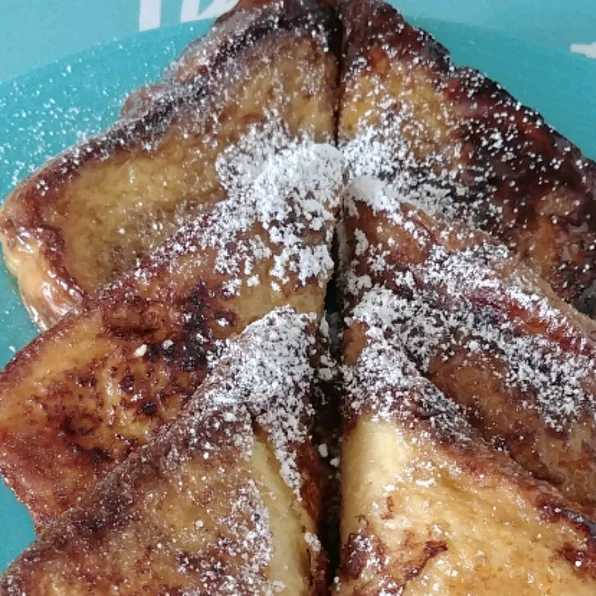

Caramelised French Toast
Recipe source: Allrecipes.com | Caramelised French Toast
Description
This is a recipe of very sweet French Toasts which may or may not have been originated from France, just like the French Fries.

Ingredients
- 4 tablespoons butter, divided
- 6 eggs
- 0.5 cup milk
- Salt to taste
- 8 slices of bread
- 1 cup brown sugar
- 0.5 cup water
Steps
- Melt two tablespoons of butter in a frying pan or skillet over medium high heat.
- Beat together eggs, milk and salt. Dip bread one at a time into egg mixture and
fry until light brown and egg is cooked.
- After 4 slices of bread have been cooked, melt remaining 2 tablespoons butter.
Cook remaining bread slices until light brown on both sides and egg is cooked
- After all bread slices have been cooked and removed from pan, add brown sugar to pan.
Stir until melted and sticky. Add water and stir. Place French toast in caramel sauce.
Turn to coat, then remove from pan. Serve.